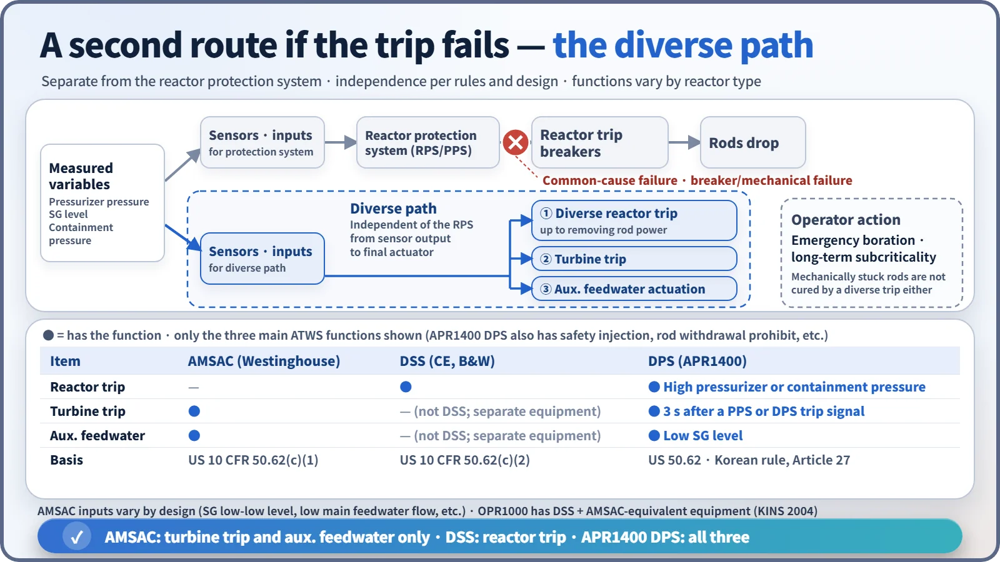
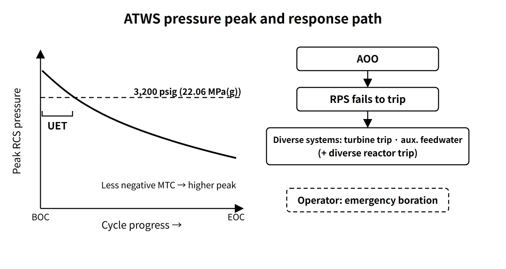

Accidents, Safety Analysis & Severe Accidents · C-SA-006
Anticipated Transient Without Scram (ATWS) — Riding Out a Failure to Trip with Diverse Systems and Negative Reactivity Feedback
When the control rods do not go in: power–heat removal imbalance, peak RCS pressure, UET and the diverse systems that back up the reactor trip.
An ATWS (Anticipated Transient Without Scram) is an event in which an anticipated operational occurrence (AOO) occurs but the reactor trip function of the protection system fails, so the control rods do not insert; because it requires multiple or common-cause failures, it is classified as beyond the design basis (10 CFR 50.62(b)). ATWT (Anticipated Transient Without Trip) is the same concept. This entry concentrates on the big picture: the ATWS phenomenon, acceptance criteria, regulatory requirements and the responses of different reactor types.
Principle and mechanism
Why it is dangerous — an imbalance between power and heat removal
The essence of an ATWS is the imbalance between core power and secondary-side heat removal. Transients that call for a trip are mostly events that reduce heat removal; if the trip fails, the power stays on and the imbalance becomes larger than in the AOO itself. There are two consequences.
- RCS overpressure: coolant temperature and volume rise → the pressurizer goes solid → safety valves discharge → pressure peak. Integrity of the reactor coolant pressure boundary is the main issue.
- Reduced fuel thermal margin: if flow and heat transfer deteriorate while power is maintained, DNB and cladding temperature become concerns.
Representative event — loss of normal feedwater (LONF)
The most limiting event for overpressure is loss of normal feedwater without a turbine trip. It proceeds as follows.
- Main feedwater is lost → SG level falls; a trip signal is generated but the rods do not insert
- The turbine keeps drawing steam, so the SG inventory is depleted quickly → secondary heat removal drops sharply
- Coolant temperature rises → volume expands → the pressurizer goes solid and the safety valves (four POSRVs in APR1400) discharge
- The negative reactivity feedback from the rising moderator temperature reduces power and the pressure peak forms
- Auxiliary feedwater restores heat removal → boron injection secures subcriticality
The peak pressure is therefore set by "how negative the MTC is" and by "the pressure-relief capacity and the timing of auxiliary feedwater and turbine trip". A turbine trip cuts off secondary steam extraction and can initially act to heat up the RCS. In an LONF ATWS, however, preserving the SG inventory and delaying dry-out has the larger effect, and in the APR1400 analysis the peak pressure was indeed lower in the case with a turbine trip.
Acceptance criterion and UET
US SRP 15.8 takes the peak RCS pressure in a PWR ATWS to be at or below the ASME Service Level C stress limit of about 3,200 psig (22.06 MPa(g)) (the value proposed in NUREG-0460).
The MTC becomes more negative as burnup proceeds (boron dilution). So early in the cycle the peak pressure in the same event can exceed the criterion. This period is called the UET (Unfavorable Exposure Time), defined as "the period (fraction of the cycle) during which, given the plant condition and available systems, the MTC is such that the RCS pressure in an ATWS would exceed 3,200 psig". The NRC regards it as the same concept as the "unfavorable MTC" in the basis documents of the ATWS rule.
![Conceptual chart of peak RCS pressure in a loss of normal feedwater ATWS versus fuel cycle progress from 0 to 100 %: without turbine trip the curve falls from about 24.4 to 18.5 MPa(g) and crosses the 22.06 MPa(g) criterion at about 18 % of the cycle; with turbine trip it falls from about 22.7 to 17.9 and crosses at about 5 %; UET bars mark 0 to 18 % and 0 to 5 %, and a lower band shows the MTC becoming more negative with burnup, beside a safety valve image and cards on what raises and what limits the peak](../../assets/images/concepts/c-sa-006-atws/fig1-atws-peak-pressure-uet.webp)
The generic Westinghouse analysis behind the rule (SECY-83-293) used a full-power MTC of −8 pcm/°F (more negative than this for 95 % of the cycle). In other words, the basis was that the MTC must be sufficiently negative for about 95 % or more of the cycle. Longer cycles (12 → 18 months) and power uprates raise the critical boron concentration and shift the MTC in the positive direction, which lengthens the UET. That turns into core design constraints such as more burnable absorber or adjusted loading patterns.
Influencing factors
| Factor | Effect on peak pressure |
|---|---|
| MTC | Largest. The less negative (beginning of cycle, initial core), the higher the peak |
| Pressure-relief capacity | The larger the pressurizer safety valve / POSRV capacity, the lower the peak |
| Auxiliary feedwater start time | The earlier, the sooner heat removal is restored |
| Turbine trip time | The earlier, the more SG inventory is preserved |
| Secondary relief | If turbine bypass is unavailable (LOCV, LOOP), only the MSSVs are used |
| RCP operation | On LOOP, reduced flow speeds up the power reduction |
The APR1400 ATWS evaluation took cycle 1 as the limiting cycle because the initial-core MTC is less negative than that of the equilibrium core, and gave no credit for operator action for 30 minutes.
What it means in a plant
Mitigation systems by reactor type

| Reactor type | System | Function |
|---|---|---|
| Westinghouse type | AMSAC | On SG low-low level (or low main feedwater flow): turbine trip + auxiliary feedwater start. No reactor trip function; armed only above about 40 % power |
| CE type, OPR1000 | DSS + diverse turbine trip and auxiliary feedwater | On high pressurizer pressure, removes power from the control rod drive mechanisms (diverse trip) |
| APR1400 | DPS | Reactor trip (high pressurizer or containment pressure), turbine trip (3-second delay after a PPS or DPS reactor trip signal), auxiliary feedwater actuation (low SG level), safety injection, control rod withdrawal prohibit |
The APR1400 DPS differs from the PPS and ESF-CCS in hardware, software and trip mechanism, so it covers not only ATWS but also software common-cause failure (CCF) of the digital safety I&C.
ATWS events considered by the DPS (APR1400 example)
The APR1400 ATWS evaluation report selected six heat-removal-reducing AOOs for qualitative evaluation: ① loss of external load ② turbine trip ③ loss of condenser vacuum ④ MSIV closure ⑤ loss of offsite power (loss of non-emergency AC power) ⑥ loss of normal feedwater. Of these, ②, ③, ⑤ and ⑥ (⑥ with and without turbine trip) were analyzed quantitatively, and loss of normal feedwater without a turbine trip was the most limiting.
Operator response (EOP)
Once a failure to trip is confirmed, a manual trip is attempted immediately; if that fails, power to the control rod drive mechanisms (MG sets) is interrupted. Then turbine trip, auxiliary feedwater and emergency boration bring the core subcritical. Westinghouse plants handle this in function restoration procedure FR-S.1 (response to nuclear power generation/ATWS); CE-type plants handle it under "reactivity control", the first safety function of the standard post-trip actions. The specific steps follow each unit's EOPs.
Related accidents and transients
- Salem Unit 1 (USA, 25 February 1983): despite an automatic trip signal, neither of the two reactor trip breakers opened, and the operators tripped the reactor manually about 30 seconds later. The cause was binding of the undervoltage trip attachments (wear from improper maintenance), and it was found afterwards that the same failure had occurred on 22 February. There was no core damage or release. It led to NUREG-1000 and Generic Letter 83-28 (trip breaker testing and maintenance, automatic shunt trip) and was the trigger for finalizing the ATWS rule.
- Browns Ferry Unit 3 (USA BWR, 1980): water had collected in the scram discharge volume, so some control rods did not insert; insertion was completed with repeated manual scrams.
Regulatory and design criteria
The criteria below are examples from the United States (US NRC).
| Basis | Key point |
|---|---|
| 10 CFR 50.62(c)(1) | All PWRs: automatic auxiliary feedwater start + turbine trip by equipment diverse from and independent of the reactor trip system, from sensor output to final actuation device |
| 10 CFR 50.62(c)(2) | CE and B&W PWRs: diverse scram system (DSS) independent up to removal of control rod power |
| 10 CFR 50.62(c)(3)–(5) | BWRs: ARI, SLCS (86 gpm, 13 wt% equivalent, etc.), recirculation pump trip |
| SRP 15.8 | Eight categories of acceptance criteria, including peak RCS pressure at Level C (about 3,200 psig) |
The history runs NUREG-0460 (1978) → Salem (February 1983) → SECY-83-293 → promulgation of 10 CFR 50.62 (26 June 1984, effective 26 July).
Easily confused pairs
| AMSAC | DSS | DPS (APR1400) | |
|---|---|---|---|
| Basis | 50.62(c)(1) | 50.62(c)(2) | 50.62(c)(1)(2) + CCF coping |
| Reactor trip | No | Yes | Yes |
| Turbine trip, auxiliary feedwater | Yes | No (separate equipment) | Yes |
| Applied to | Westinghouse type | CE and B&W types | APR1400 (OPR1000 has the equivalent of DSS + AMSAC) |
ATWS and SBO (total loss of AC power) are both beyond-design-basis multiple-failure events, but ATWS is essentially a failure of reactivity control, while SBO is a loss of the power that drives heat removal.
Key points at a glance
- Definition: AOO + failure of the reactor trip function (rods not inserted); a beyond-design-basis event caused by multiple failures or CCF.
- Phenomenon: power–heat removal imbalance → coolant expansion → pressurizer goes solid → safety valves discharge → RCS pressure peak.
- Most limiting event: loss of normal feedwater (LONF) without turbine trip.
- Criterion: peak pressure at ASME Level C, about 3,200 psig (22.06 MPa(g)).
- Influencing factors: MTC (largest), pressure-relief capacity, timing of auxiliary feedwater and turbine trip.
- UET: the period with an MTC that would make the pressure exceed the criterion; concentrated early in the cycle.
- Regulation: 10 CFR 50.62 (1984) — diverse turbine trip and auxiliary feedwater for PWRs, DSS for CE and B&W.
- Systems: AMSAC (Westinghouse), DSS (CE), DPS (APR1400).
- Response: manual trip → interrupt MG sets → turbine trip and auxiliary feedwater → emergency boration.
